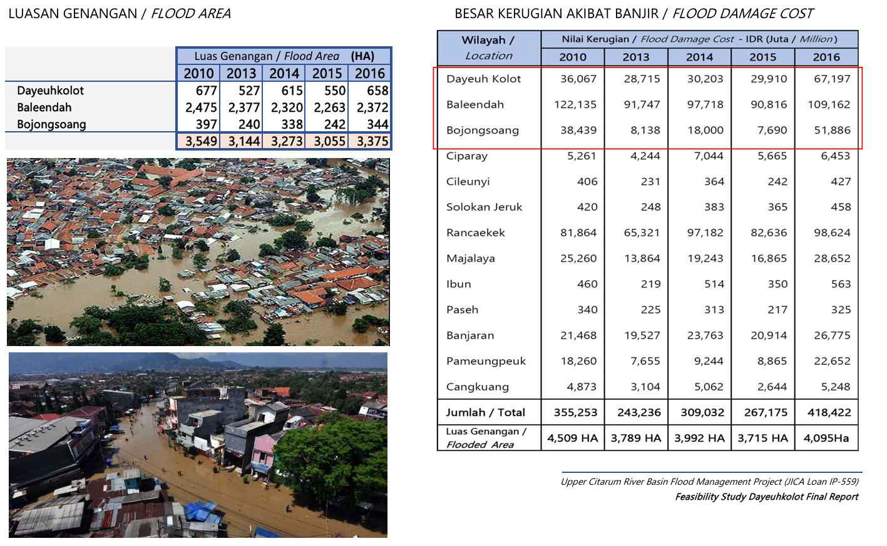
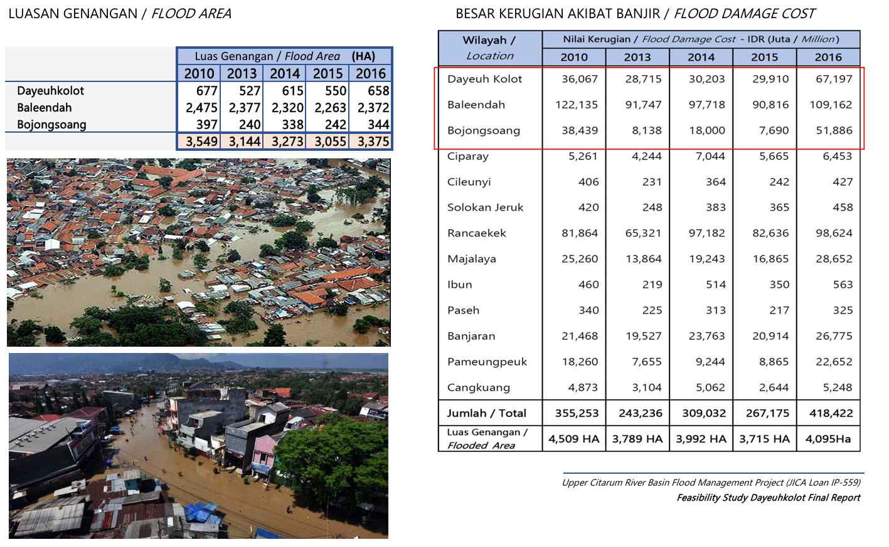

Prasarana Pengendali Banjir Bandung Selatan (PPBBS) yang akan
dibangun berupa kolam retensi dan kanal banjir yang bermula dari
pertemuan sungai Cikapundung dan sungai Cisangkuy yang bermuara di
sungai Citarum - kemudian mengalir menuju ke barat bersimpangan
dengan floodway Cisangkuy, dan terus menuju sungai Ciwidey dan
berujung di sana, yang selanjutnya mengalir kembali ke sungai
Citarum. The South Bandung Flood Control Infrastructure (PPBBS) to
be built consists of retention ponds and floodway channel starting
from the confluence of the Cikapundung and Cisangkuy rivers which
empties into the Citarum river - then heading west intersecting
the Cisangkuy floodway, and continuing towards the Ciwidey river,
which then flows back into the Citarum river. Lokasi proyek berada
di 3 kecamatan di kabupaten Bandung, meliputi kecamatan-kecamatan:
- Baleendah
- Pameungpeuk
- Katapang
PPBBS merupakan kombinasi dari upaya struktural pengurangan resiko
besaran banjir dengan membangun :
- Prasarana pengendali banjir:
- peningkatan kapasitas sungai tanggul
- pelimpah banjir
- bendungan
- Prasarana pengendali aliran permukaan:
Prasarana Pengendali Banjir Bandung Selatan (PPBBS) diintegrasikan
dengan Rencana Pengendalian Banjir Wilayah Sungai Citarum (Rencana
Pengelolaan Sumber Daya Air Wilayah Sungai Citarum) yang ada,
sehingga menjadi program yang terintegrasi.
Dengan infrastruktur ini daerah seluas
2,410 HA yang semula banjir, dapat direduksi
menjadi hanya 590 HA saja. Reduksi ini terbesar
terjadi di daerah
Baleendah, Dayeuhkolot dan Bojongsoang
2. PETA KEJADIAN BANJIR & KAWASAN RAWAN BANJIR
 

4. Proyek Pengendalian Banjir Das Citarum Hulu
Kementerian PUPR di tahun 2016-2020 telah melaksanakan proyek
Pengendalian Banjir DAS Citarum Hulu yang meliputi:
- Check dam
- Embung Gedebage
- Kolam Retensi Cieunteung
- Terowongan Nanjung
- Floodway Cisangkuy
- Polder Andir (tahap konstruksi)

5. Pengaruh perubahan Iklim terhadap Basis Desain
Perubahan iklim akibat pemanasan global berpengaruh pada pola
curah hujan sehingga mengakibatkan pergeseran puncak banjir, di
samping itu pengembangan kawasan yang mengubah tata guna lahan
juga berdampak atas besaran rencana...
Perubahan ini berakibat masih timbulnya banjir belakangan ini
meskipun upaya struktural di atas telah dilakukan...
Usulan solusi Prasarana Pengendali Banjir Bandung Selatan yang
digagas bertujuan untuk melengkapi upaya struktural yang telah
dilakukan pemerintah dengan memperhitungkan pengaruh perubahan
iklim di atas, dan menggunakan kriteria perencanaan sebagaimana
dituangkan dalam RPJMN 2015-2019 Sasaran Ketahanan Air -
Ketangguhan masyarakat dalam mengurangi risiko daya rusak air.
Studi yang telah dilakukan menggunakan kriteria hujan rencana dan
debit banjir rencana dengan perioda ulang 50 tahunan, dengan
usulan solusinya adalah membuat kolam retensi dan kanal banjir
berawal dari titik pertemuan sungai Cikapundung dan Cisangkuy di
sungai Citarum (sekitar Andir, Kabupaten Bandung) dan berakhir di
sungai Ciwidey - menunjukkan adanya reduksi yang signifikan
terhadap luasan genangan banjir. Dengan infrastruktur ini daerah
seluas 2,410 HA yang semula banjir, dapat direduksi menjadi hanya
590 HA saja. Reduksi ini terbesar terjadi di daerah Baleendah,
Dayeuhkolot dan Bojongsoang. Daerah Baleendah, Dayeuhkolot dan
Bojongsoang merupakan daerah yang termasuk dalam kawasan Cekungan
bandung. Wilayah Cekungan Bandung sangat strategis dan memiliki
nilai ekonomis yang tinggi, dan ini ditunjukkan dengan terbitnya
Perpres 45 tahun 2018 tentang Rencana Tata Ruang Kawasan Perkotaan
Cekungan Bandung , yang bertujuan untuk mewujudkan kawasan
perkotaan yang berkelas dunia sebagai pusat kebudayaan,
pariwisata, serta kegiatan jasa dan ekonomi kreatif nasional, yang
berbasis pendidikan tinggi dan industri berteknologi tinggi yang
berdaya saing dan ramah lingkungan. Dengan terbebaskannya Bandung
Selatan dari banjir, daerah tersebut dapat dikembangkan menjadi
kawasan perkotaan sebagai bagian dari Pengembangan Kawasan
Perkotaan Cekungan Bandung.